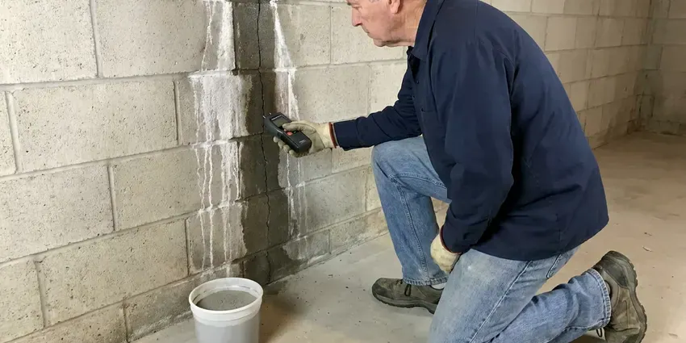

Flood Restoration in Milwaukee, WI
Our flood restoration crews in Milwaukee, WI bring pumps, extractors and drying equipment to recover your home after a flood.
- Fast Emergency Response
- Fast Emergency Response
- Licensed & Insured
- Expert Water Extraction

Get Flood Water Out and Your Life Back on Track in Milwaukee, WI.
Contact HKV Plumbing now for a rapid response to any water damage or flooding situation at your property.
Professional Flood Restoration for Homes in Milwaukee, WI
HKV Plumbing specializes in complete flood restoration, helping homeowners and businesses in Milwaukee, WI recover from serious water damage. From initial water extraction to thorough drying and sanitization, our certified technicians are equipped to handle all aspects of flood cleanup.
Our expertise includes:
- Antimicrobial treatment, odor control and structural drying
- Submersible pump and truck-mount extraction for deep standing water
- Repairs to plumbing and damaged structures

Additional Plumbing Maintenance Services in Milwaukee, WI
Our maintenance and specialty plumbing services in Milwaukee, WI catch small problems before they become emergencies.


Customers
Why Choose HKV Plumbing for Flood Restoration in Milwaukee, WI?
Flood water carries soil, bacteria and debris that soak into building materials. Prompt cleanup and sanitizing protect your health and reduce how much has to be replaced.
- Certified Technicians, All our flood restoration specialists are certified and trained in the latest water damage cleanup techniques and safety protocols.
- Rapid Pump-Out, High-capacity pumps and extractors remove standing water fast.
- Safe Sanitizing, Contaminated areas are cleaned and treated to cut down bacteria and odors.
Citywide Coverage
Our commitment extends across the entire Milwaukee area, providing reliable flood restoration services to all residents and businesses. We are familiar with the many types of foundations and building materials found in Milwaukee homes, which helps us tailor our approach.
Experienced Team
The HKV Plumbing team is well trained and experienced in modern flood restoration techniques. We prioritize continuous education so our methods are always up to date with the latest industry standards and equipment.
Safety-First Approach
HKV Plumbing prioritizes the safety of your family and our team throughout the flood restoration process, following strict protocols to prevent further damage and stay code compliant. We also focus on preventing health risks linked with water damage, like mold.
Trusted Certified Milwaukee Plumbing Services Professionals
At HKV Plumbing, we take pride in providing licensed, certified plumbing services throughout Milwaukee, WI. Backed by recognized industry credentials, our experienced plumbers combine technical skill with genuine customer care. Whether it is repair, installation, or maintenance, we follow strict safety and quality standards to deliver long-lasting results you can trust.
Call Us Now PHCC Plumbing Contractor Recognition
PHCC Plumbing Contractor Recognition Better Business Bureau (BBB) Accreditation
Better Business Bureau (BBB) Accreditation Angi Certified Pro
Angi Certified Pro ISO 9001 Quality Management Certification
ISO 9001 Quality Management CertificationComplete Flood Restoration Services in Milwaukee, WI
Insurance Claims Assistance for Flood Damage in Milwaukee, WI
Navigating insurance claims after flood damage in Milwaukee, WI can be complex. HKV Plumbing can assist homeowners and businesses by providing detailed documentation and estimates and by communicating directly with your insurance provider. We aim to speed up the claims process, helping you receive the coverage you deserve for flood restoration services.

Water Heater and Plumbing Repair After Floods in Milwaukee, WI
Gas water heaters, furnaces and electrical equipment that sat in flood water may be unsafe to use. We inspect and replace water heaters whose burners, controls or insulation were submerged. Floor drains and drain lines filled with silt are cleared. This step makes sure your plumbing is safe and working before you move back in.
Contents Cleaning and Restoration in Milwaukee
Beyond structural damage, personal belongings can also be affected by floodwaters. We offer services to clean, sanitize, and restore salvageable items such as furniture, documents, and electronics. Our team assesses each item and uses appropriate cleaning methods to help you recover your cherished possessions. This can save you major replacement costs and stress.
Garage and Ground-Level Flooding in Milwaukee, WI
Garages often take the brunt of storm runoff because they sit at driveway level. Flood water can damage water heaters, laundry equipment, stored items and drywall. We remove water and mud, check water heater burners and controls for damage and dry the space. Damaged appliances and plumbing are repaired or swapped out.
Storm Flood Cleanup in Milwaukee
Summer storms can drop heavy rain in a short time, sending runoff into garages, patios and living spaces. Rising groundwater in wet seasons can push water through basement walls and floors, putting extra load on drainage systems. Hard or saturated ground absorbs water slowly, so flooding can happen fast. We pump out water, shovel out mud and silt and clean affected surfaces. Then we set up drying equipment and monitor until the structure is fully dry.
Structural Drying and Dehumidification in Milwaukee, WI
After water extraction, thorough structural drying is crucial to prevent mold growth and further damage to your property in Milwaukee, WI. We use commercial-grade dehumidifiers, air movers, and specialized drying equipment to remove moisture from hidden areas. Our technicians monitor moisture levels in walls, subfloors, and insulation, making sure everything is completely dry to industry standards.
Plumbing Repairs After Flooding in Milwaukee, WI
Often, flooding is caused by a plumbing failure like a burst pipe, water heater leak, or sump pump malfunction. Our licensed plumbers can diagnose and repair the source of the water damage. We can replace damaged pipes, fixtures, and appliances, so your plumbing system is fully working and up to code. We work with all major brands like Rheem, AO Smith, and Bradford White for water heaters and related equipment.

Mold Prevention and Remediation in Milwaukee
One of the most serious consequences of flooding is mold. We apply antimicrobial treatments to affected areas to slow mold growth and eliminate existing colonies. Our team is trained in safe mold remediation practices, including containment and air filtration, protecting your family's health. Early action after a flood is key to preventing widespread mold issues, especially in warm, damp weather.
Flood Restoration Near Me in Milwaukee, WI
Our rapid response teams are always ready to deploy across Milwaukee, so help is just a phone call away. For any water emergency, trust HKV Plumbing to deliver fast, professional, and thorough flood restoration services right to your doorstep.
When a storm or burst pipe floods your home, help needs to arrive fast. Our crews are based nearby and keep pumps, extractors and drying equipment ready during storm season. That means faster water removal and less damage.
HKV Plumbing at a Glance
- Fully licensed plumbing team covering Milwaukee, WI
- 24/7 emergency service with same-day scheduling
- Upfront, flat-rate pricing before work begins
- 4.8-star rated by 448+ Wisconsin customers
Milwaukee Map
Milwaukee Information
- Population
- 561,385
- Area codes
- 414/262/920
- Service area
- Milwaukee and communities within 40 miles
- Nearby
- Wauwatosa, West Allis, Waukesha, Racine
Flood restoration is essential for homes in Milwaukee, WI because damp conditions speed up mold growth and wet slabs and framing can trap moisture and weaken the structure if not addressed quickly.
Expert Services
Trust our professionals for reliable HKV Plumbing solutions in Milwaukee, WI.
Our Specialized Plumbing Services in Milwaukee, WI
At HKV Plumbing, we provide a complete range of plumbing services across Milwaukee, WI. From leak detection to full system installations, our team ensures fast, precise, and affordable service for both residential and commercial properties. Explore our core services below:


How Our Flood Restoration Service Works in Milwaukee, WI
Our flood restoration process in Milwaukee, WI is designed for speed and thoroughness, so your property is restored safely and effectively.
Request a Quote
Contact us immediately at (414) 432-4641 for emergency flood restoration service. We will gather initial details about your situation and dispatch a team promptly.
Emergency Assessment
Our technicians arrive to assess the extent of the water damage, identify the source, and develop a complete restoration plan. This includes safety checks for electrical hazards and structural integrity.
Water Extraction
We use powerful, industrial-grade equipment to quickly remove all standing water from your property. This crucial step prevents further damage and speeds up the drying process.
Frequently Asked Questions About Flood Restoration in Milwaukee
Smaller flood cleanups with extraction and drying often cost $2,500 to $6,000. Larger projects with contamination, mud removal and rebuild work can run $10,000 to $30,000 or more. We provide a detailed estimate and documentation for insurance.
Drywall and flooring replacement usually do not need permits, but water heater replacement, electrical repairs and structural work often do. We handle plumbing permits when required.
Most homeowner's insurance policies cover water damage from sudden and accidental events, like a burst pipe or water heater leak. However, damage from natural floods typically requires a separate flood insurance policy. We can help you work through the claims process and provide documentation for your insurer.
We use professional-grade equipment from leading manufacturers in the restoration industry. This includes powerful water extraction units from brands like Prochem and Mytee, high-capacity dehumidifiers from Dri-Eaz and Abatement Technologies, and air movers from trusted makers. We also use advanced moisture detection tools from Flir and Tramex.
Our mold prevention strategy involves rapid water extraction, thorough drying with commercial-grade equipment, and applying EPA-approved antimicrobial agents to affected surfaces. We also manage humidity levels and conduct post-drying inspections to confirm all moisture has been eliminated, greatly reducing the risk of mold.
While you can handle very small, clean water spills, professional flood restoration is highly recommended for serious water damage. Professionals have the professional equipment, expertise, and certifications to properly extract water, thoroughly dry hidden areas, prevent mold, and make sure your property is safe and structurally sound. DIY efforts often miss hidden moisture, leading to lasting problems.
Permits are usually not required for basic water extraction and drying. However, if the flood damage calls for major structural repairs, electrical work, or plumbing system overhauls, permits from Milwaukee authorities may be required. HKV Plumbing will advise you on any required permits and can help coordinate the application process.
Yes. Flood water often contains bacteria, sewage, chemicals and debris. Avoid contact without protective gear and keep children and pets away.
What People Are Saying About Our Plumbing Experts?

Emily R.
I called HKV Plumbing for plumbing repair, and the technician was fast, polite, and thorough. They explained the problem clearly and fixed it the same day. I will definitely hire them again. Highly recommended!
Plumbing Repair · Milwaukee, WI
Robert G.
The trenchless sewer replacement saved our front yard. They walked us through the camera inspection footage first so we knew exactly what we were paying for.
Sewer Line Replacement · Kenosha, WI
Patricia H.
We had a slab leak that two other companies could not find. HKV Plumbing located it in under an hour, explained our options, and the price matched the quote to the dollar.
Slab Leak Repair · Kenosha, WI
Mark T.
When our office needed drain cleaning, HKV Plumbing provided quick, reliable service. The plumber arrived on time and made sure every drain flowed perfectly before leaving. Very satisfied.
Drain Cleaning · Sheboygan, WI
Daniel K.
A pipe burst at 11 pm and they actually answered. The plumber showed up within the hour, shut everything down, and had us back to normal the next morning. Could not ask for more.
Emergency Plumbing · Wauwatosa, WI
Laura S.
I scheduled a water heater replacement, and the team made the process smooth and affordable. The new unit works perfectly, and they cleaned up after completing the job.
Water Heater Replacement · Wauwatosa, WI